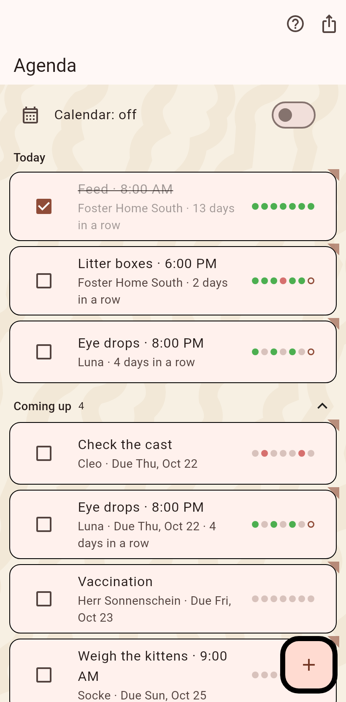

The planned work by date: chores that come around, appointments with a time, reminders that apply to a day. Missed ones stay at the top.

The recurring tasks: feeding, litter, medicine. Daily, every so many days, on weekdays, or one time with a due date. They stand under Today with a box, a streak and the last seven days as dots; Coming up shows the next week without the daily ones. The box ticks a chore and answers with the paw. A chore can remind you with a notification at a chosen time; a done chore can be duplicated onto another cat.
An appointment has a date and a time, a reminder applies to a day. The box finishes one: a value can be written into a field, and the card stays for the day, ticked; a tap on it plans the next one. A hold changes the date, the bin deletes it.
One appointment with several cats: tick them in it, the agenda shows one card with their names, and finishing asks which cats were treated. The untreated stay planned.
The switch at the top mirrors the appointments into a calendar of the phone; the bar exports them as a calendar file. The trophy opens the achievements.